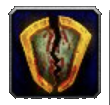

PVE Guide
 Talents
Talents
Single Target Talents:

This talent tree is going to be your primary talent spec. In a strictly single target fight this will be roughly a 300-600 dps increase.
Sustained AOE Talents:

This talent tree is primarily going to be used for sustained aoe fights. Generally only worth it for 4+ targets and incredible for heroic dungeons. In this talent spec, you will use thunderclap to spread your rend to all enemies within range.
The one point in drums of war is super flexible anywhere else in the arms tree, however if you are going to be interrupting in a raid encounter it will save you rage.
If you are only going to have one arms spec I'd recommend using the Sustained AOE spec.
 Glyphs
Glyphs
Prime:
 Overpower
Overpower Mortal Strike
Mortal Strike Slam
Slam
Major:
 Sweeping Strikes
Sweeping Strikes Cleaving
Cleaving-  Colossus Smash
For the third Major glyph slot, Colossus Smash is highly recommended over Rapid Charge. The extra sunder application is more beneficial than a 1-second cooldown reduction on Charge.
Minor:
 Berserker Rage
Berserker Rage Battle
Battle Command
Command